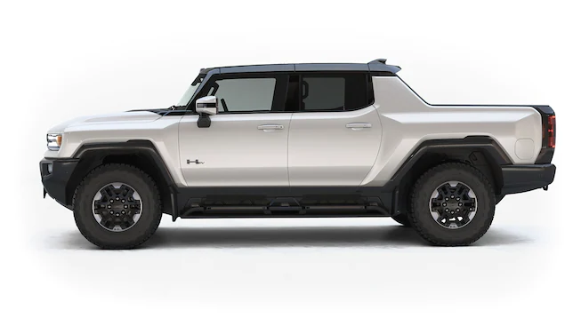
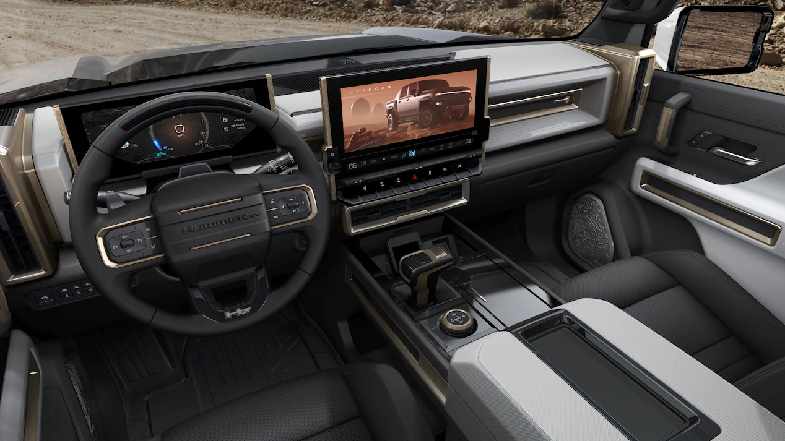
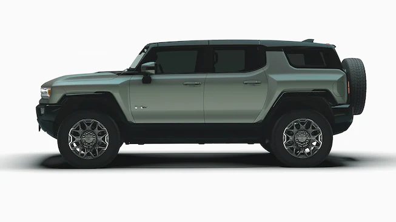

The GMC Hummer EV (also known as Hummer EV and badged as HEV) is a line of battery electric full-size vehicles produced by General Motors under the GMC marque, and its own sub-brand.[9] The Hummer EV line was introduced in October 2020 with the unveiling of the pickup truck (SUT) model. The sport utility vehicle (SUV) model was unveiled in April 2021.[10] As of Q3 2022, 783 units have been delivered to customers. [11]


Edition 1:
Arriving to the production line in 2022, Edition 1 is the sole model available for the first year and is considered to be a limited edition that was available for pre-order by the end of the launch event on October 20, 2020. All Edition 1 units are white with a black roof and feature bronze-colored wheels. The interior is a two-tone black-and-gray with bronze accents and Edition 1 badges.[14] The Edition 1 will also feature Easter eggs themed after the Apollo 11 moon landing.[15]
Edition 1 has three electric motors with 1,000 hp (750 kW; 1,000 PS), 329 miles (529 km) of range,[7] and comes fully loaded with the Extreme Off-Road package, which includes 35-inch mud-terrain tires, skid plates, and rock sliders.[14]
The Hummer EV Edition 1 sold out in the first 10 minutes of opening the pre-orders.[16] Initial sales of the Edition 1 were delayed, but were later available in 2022.
One of the exclusive features introduced with the Hummer EV, coming standard in Edition 1, is the new "Crab Walk", which allows the Hummer EV to travel diagonally by using a four-wheel steer. Edition 1 also includes UltraVision underbody cameras for easier off-road maneuverability and visibility, Watts to Freedom system, adaptive air suspension, steel underbody armor, Extract Mode (lifts the suspension six inches for more clearance), Super Cruise (GM's driver assistance system that allows for automatic lane change and hands-free driving on compatible highways that have been mapped by GM), a digital key, removable roof panels, and GMC's MultiPro Tailgate.
In Extract Mode, approach, departure, and breakover angles (the greatest slope angle the vehicle can begin climbing, drive off of, and crest a hill, respectively) are 49.7, 38.4 and 32.2 degrees respectively. Ground clearance is 15.9 in (403.9 mm) and maximum water fording depth is 32 in (812.8 mm). GMC estimates wall-climbing ability at 18 inches and suspension travel at 13 inches.[17][18]

HTML Table
| Main |
|
| Gear |
Automatic |
| Number of gears |
4 |
| Transition |
4x4 |
| Maximum speed |
105 kmh |
| own weight |
2.703 kg |
| altogether weight |
3.702kg |
| sizes |
|
| length |
4.686 m |
| width |
2.197 m |
| height |
1.956 m |